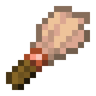
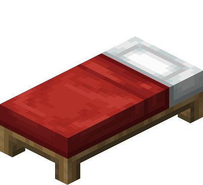
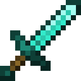
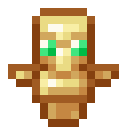
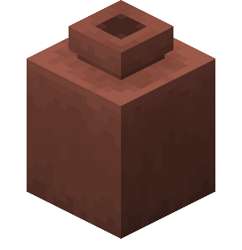
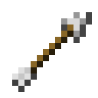

Otherworld
Netherworld
End
Adventure
Husbandry
Adventure
Voluntary Exile
Is It a Bird?
Monster Hunter
The Power of Books
What a Deal!
Crafting a New Look
Sticky Situation
Ol' Betsy
Surge Protector
Caves & Cliffs

Respecting the Remnants
Sneak 100

Sweet Dreams
Hero of the Village
Is It a Balloon?
A Throwaway Joke
It Spreads
Take Aim

Monsters Hunted

Postmortal
Hired Help
Star Trader
Smithing with Style
Two Birds, One Arrow
Who's the Pillager Now?
Arbalistic

Careful Restoration
Adventuring Time
Sound of Music
Light as a Rabbit
Is It a Plane?
Very Very Frightening

Sniper Duel
Bullseye